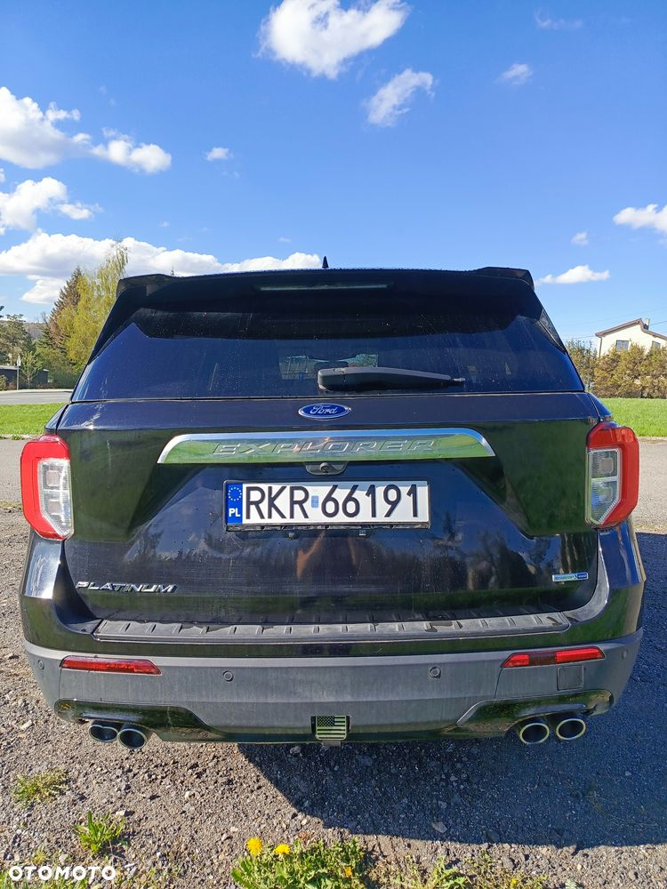
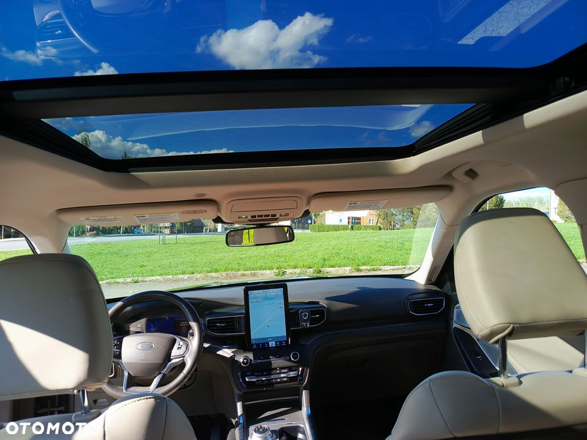
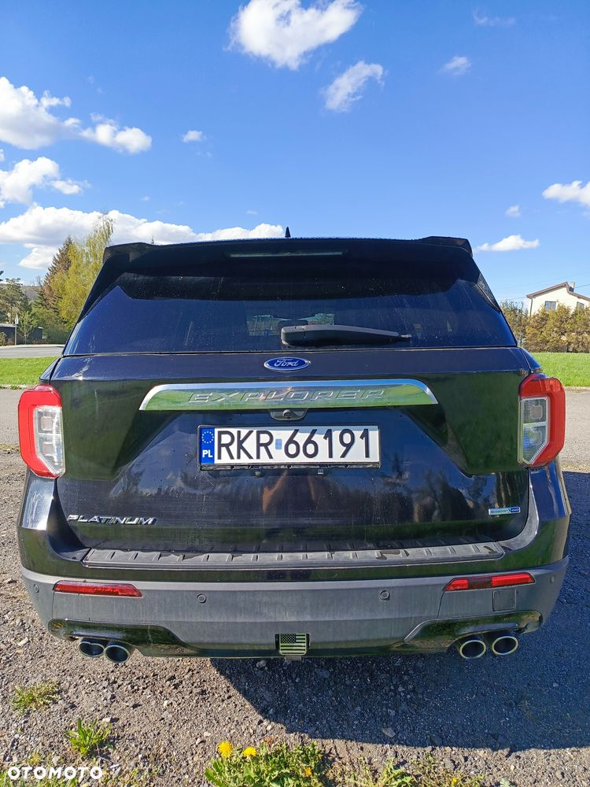
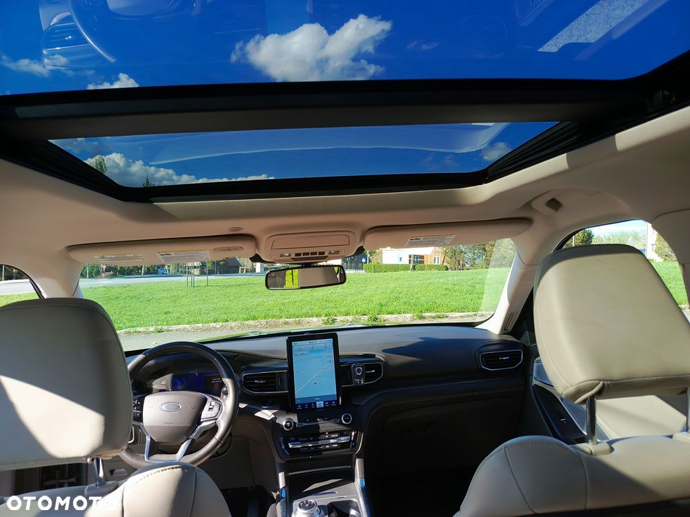
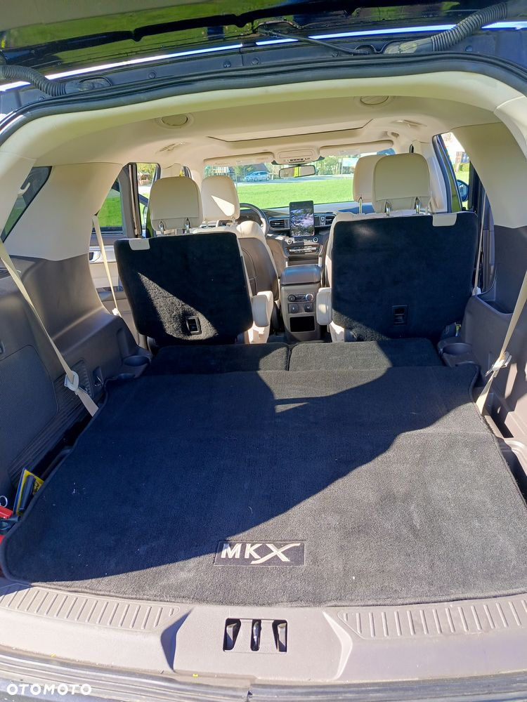
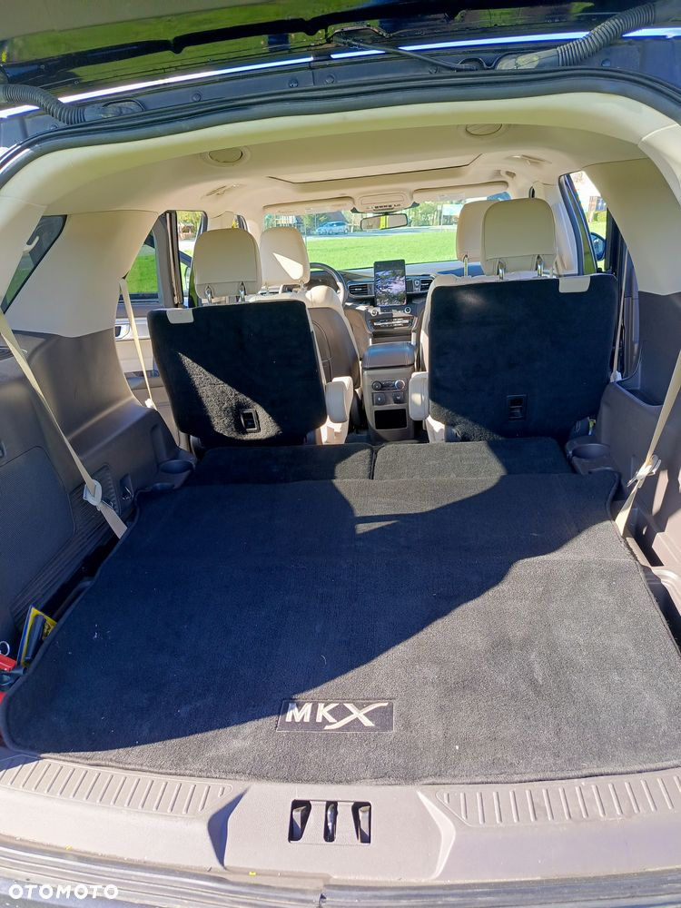

Witam, posiadam na sprzedaż prywatny samochód Ford Explorer. Rok 2020.
Sprowadzony w 2024 r. Ze Stanów jako uszkodzony - tył samochodu (tytuł Salvage - szkoda całkowita. Po naprawie bez problemu przeszedł przegląd techniczny i został dopuszczony do ruchu). Zdjęcia dostępne w Google po wpisaniu VIN pojazdu.
Silnik 3.0 benzyna 370 KM.
Radio i zegary po pełnej konwersji - język polski, wybieranie głosowe, mapy europy, fale parzyste, Android Auto / CarPlay.
Pojazd zarejestrowany na 6 osób. Hak wbity w dowód.
Ładna tapicerka: brązowe skóry, kierownica i dodatki plus jasna tapicerka na boczkach drzwi i fotelach. Ładnie się to prezentuje na żywo.
Pełna wersja wyposażenia Platinum:
Dodatki chromowe (felgi, listwy, grill)
Kamery 360°
Czujniki przód i tył
Samodzielne parkowanie
Radar przód
Aktywny tempomat
Czytanie znaków
Asystent zmiany pasa
Asystent utrzymania pasa
Automatyczna skrzynia biegów
Nagłośnienie Bang & Olufsen
Duży ekran nawigacji
Virtual cockpit
Android Auto/Carplay
Panorama
Hak wbity w dowód
6 miejsc siedzących wbite w dowód
Masaże foteli
Elektryczne fotele, kierownica
Wentylowane i grzane fotele
Grzana kierownica
Wybieranie głosowe
Zapobieganie kolizjom
Fotochromatyczne lusterko
Automatyczna klima 3 strefowa
Odpalanie zdalne z kluczyka
Zmieniane oświetlenie wnętrza (kilka kolorów do wyboru)
Zmiana trybu jazdy (sportowy, eko, śnieg, śliska nawierzchnia, przyczepa itp.)
Ładowarka indukcyjna
Auto hold (zaciągnie ręcznego pod górkę, ułatwia ruszanie)
Aktualne mapy całej Europy
Samodzielne parkowanie
Elektryczny ręczny
Automatyczne światła długie
Doświetlanie zakrętów
Czytanie znaków drogowych
Po naprawie samochodu zostało wymienione: filtry: oleju silnikowego, skrzyni biegów, powietrza, kabinowy, olej w skrzyni biegów, olej w silniku, miska olejowa skrzyni.
Oc i przegląd do grudnia 2025 r.
W polsce zrobione okolo 5 tysiący kilometrów bez żadnych problemów.
Opony posiadają dużo bieżnika. Klocki i tarcze OK.
W razie pytań proszę dzwonić, pisać.
Nie zamieniam, tylko sprzedaż na umowę K-S.
Do obejrzenia w Krakowie, Krośnie i pomiędzy tymi miastami / z dojazdem w umówione miejsce.
 
 
